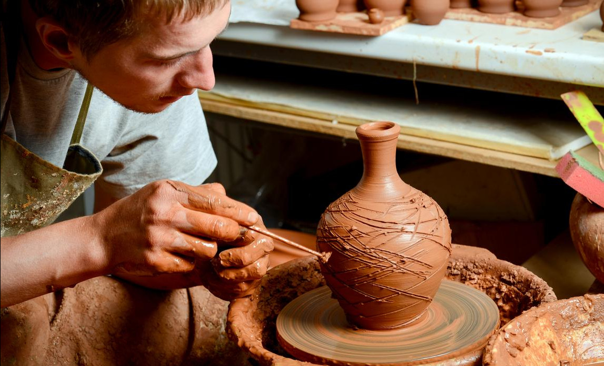
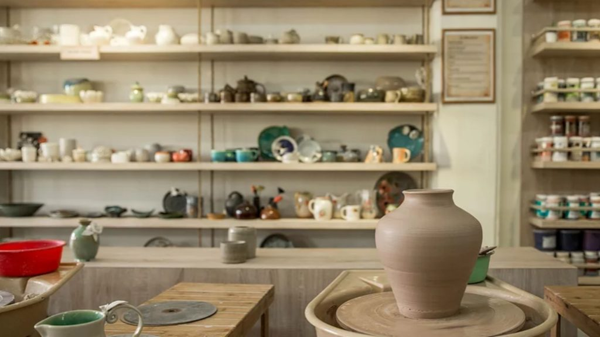
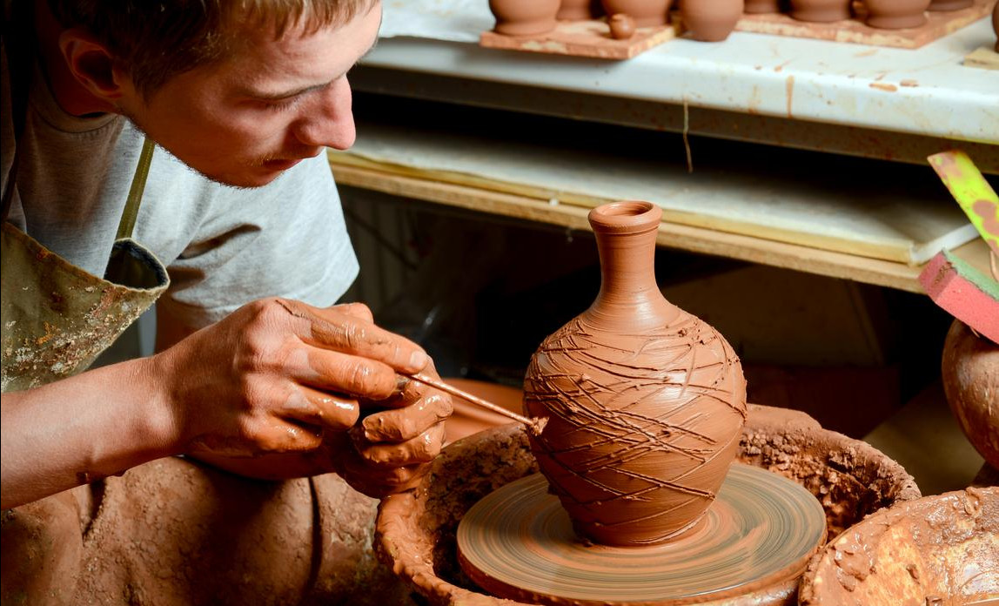
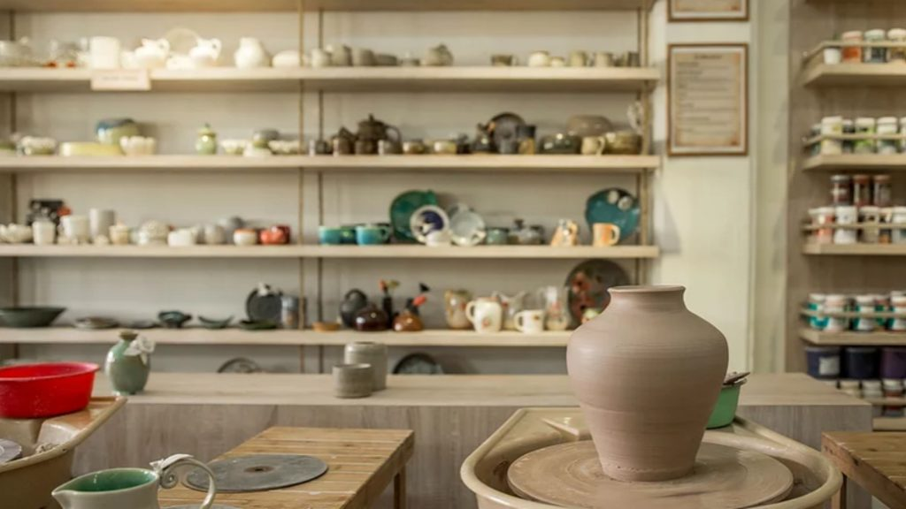

artist

Enrique Stravadiani
encantada de conocerte.

My work explores the intersection of beauty, status, and functionality by reinterpreting early 20th-century fine goods through the Japanese Nerikomi technique. Using porcelain, I create durable yet intricate pieces that blend Art Nouveau-inspired ornamentation with modern practicality, redefining the role of decorative arts in everyday life. My current work is focused on creating increasingly complex and intricate designs within the body of my pieces.
the studio
 



accolades

Ooogabooga award
800 B.C.
Tony Hawk Choice award
1998

Sleezy Clamshell award
2021